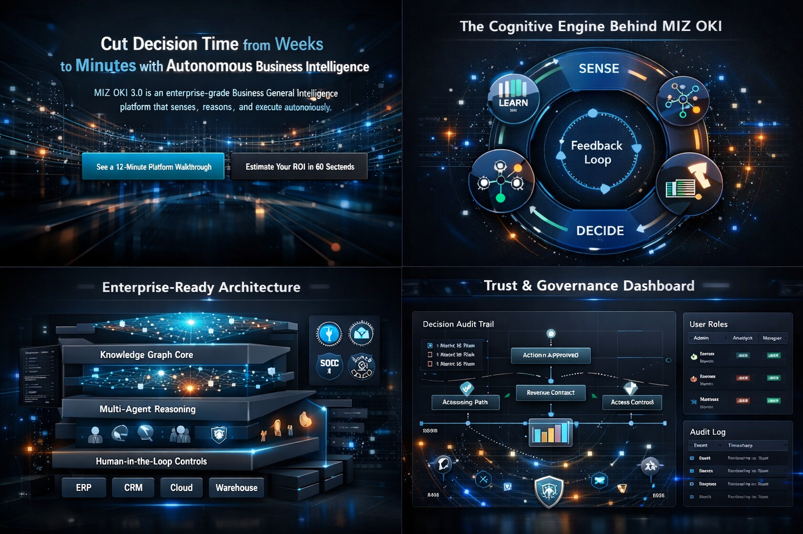

Platform Architecture
Built for scale, security, and trust—so autonomous decisions remain governed, explainable, and auditable. Four architectural innovations enable verifiable autonomy.
Core Architectural Innovations
Decision Control Plane (DCP)
Centralized authority for all autonomous proposals. Agents cannot bypass the DCP—this separation of proposal from authorization is a fundamental constraint.
Validation & Arbitration Layer (VAL)
Independent Verifier, Risk, and Policy agents challenge every proposal. Disagreement is signal, not error.
Counterfactual Simulation Engine (CSE)
Simulate proposed actions, alternatives, and no-action baselines before execution. Learn without risk.
Temporal-Causal Knowledge Graph (TCO-KG)
Decision memory and audit spine. Stores facts, proposals, simulations, outcomes with timestamps.
SENSE → REASON → PLAN → VALIDATE → DECIDE → ACT → LEARN — with traceability and governance at every step.

The Four-Layer Stack
Each layer has explicit responsibilities and interfaces with the others through defined protocols.
Layer 1: Integration & Sensing
Plug-in connectors to ERP, CRM, data warehouses, cloud infrastructure, and external data feeds. No rip-and-replace required.
Layer 2: Reasoning & Planning
Causal GraphRAG traverses the knowledge graph. Multi-agent reasoning generates and scores candidate strategies.
Layer 3: Validation & Decision
Verifier, Risk, and Policy agents independently validate proposals. The Decision Control Plane authorizes execution.
Layer 4: Execution & Learning
Orchestrated execution with rollback capabilities. Outcomes feed back into the knowledge graph for continuous improvement.
Metrics That Matter
Measure decision leverage, not vanity usage. Every metric is traceable to business outcomes.
Decision latency
Time from signal detection to executed action. Target: <60 seconds end-to-end.
Decision confidence
DCP authorization score and thresholds applied. Full visibility into scoring factors.
Override frequency
How often humans intervene—and why. Tracks governance health.
Outcome delta
Difference vs baseline or control policy. Measured against counterfactual simulations.
Learning velocity
Improvement rate over time from outcomes. Stability-plasticity balance tracking.
Audit completeness
Percent of actions with full trace and attribution. Target: 100%.